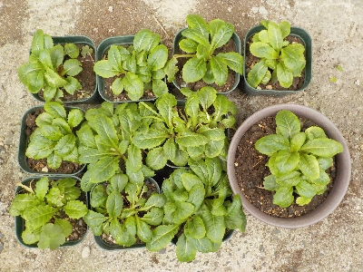
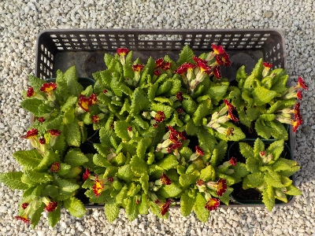
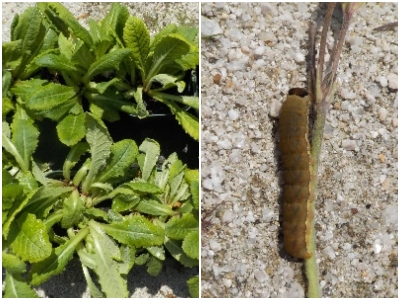

小さな鉢の状態で夏越ししたプリムラです。
更新日 : 2025/10/25

去年大きな鉢でプリムラをそだてたら、葉っぱが茂って野菜っぽくなりました。
玄関に野菜が置いてあるみたいな感じになって、違和感があったので今年は小さく育てるつもりです。
夏の間に脇芽が出てますね。取った方がスッキリしていいんだろうけど、ごちゃごちゃしているのも面白そうなので、このままの状態で育てます。
更新日 : 2025/10/25

去年大きな鉢でプリムラをそだてたら、葉っぱが茂って野菜っぽくなりました。
玄関に野菜が置いてあるみたいな感じになって、違和感があったので今年は小さく育てるつもりです。
夏の間に脇芽が出てますね。取った方がスッキリしていいんだろうけど、ごちゃごちゃしているのも面白そうなので、このままの状態で育てます。
更新日 : 2026/03/28

プリムラは水の消費量が多いので、ケースに入れて育てています。
まとめて入れているので、可愛さ半減です。
ケースから出せばいいんですが、そうすると水やりが面倒です。
なのでケースに入れたまま花を楽しもうと思います。
更新日 : 2026/04/25

一月花を楽しみました。花が終わったので花を切り取ったり、痛んだ葉っぱを取り除いてたら大きいヨトウムシが出てきました。
以前にもプリムラが枯れたことがあったんですが、きっとこいつが原因ですね。
畑にいるのはわかりますが、小さい植木鉢にまでいるとは思っていませんでした。
消毒をしっかりかけておきました。
可愛い方が絶対いい。そうに決まっている。